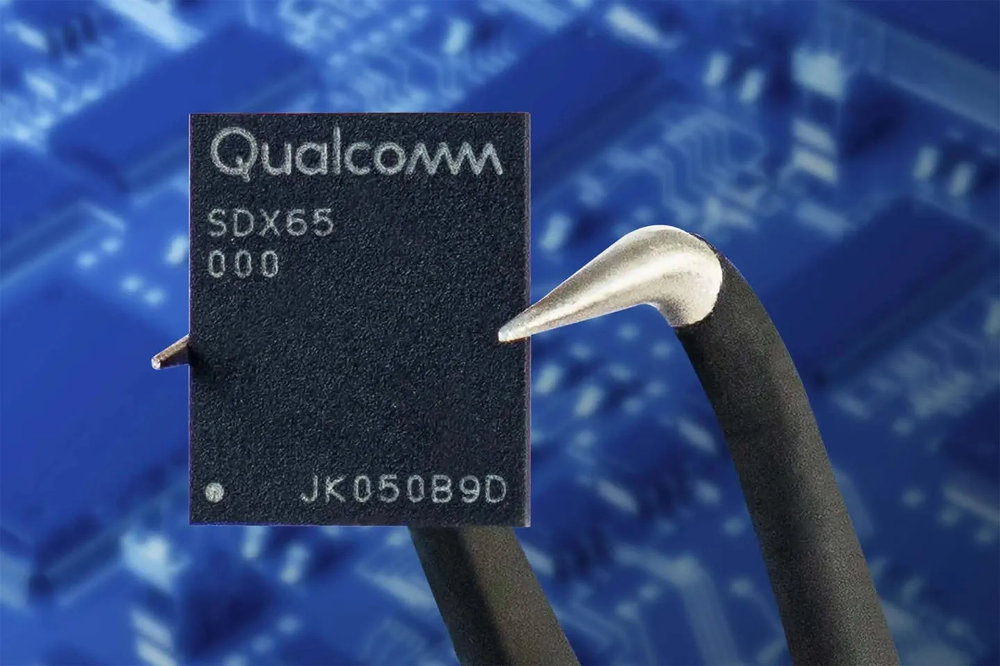
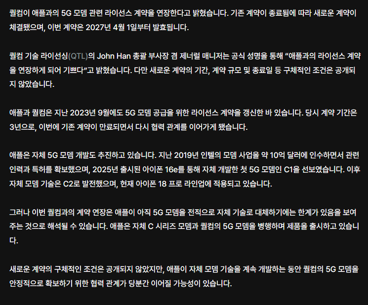

결국 퀄컴이랑 라이센스생산 재계약함
저 C1 C2 5g 모뎀칩이 무엇인가하면
팀쿡이 인텔 모뎀사업부 인수하면서 퀄컴이랑 특허사용료 로 기싸움 하면서 특허료 지급 안하고 버티다가 2019년에 합의 하면서
6.8조원 한번에 일시불로 지급하면서 굴욕을 맛봤는데, 그때이후 인텔 모뎀사업부 갈궈가면서 만들어낸 모뎀칩임
이번 아이폰18 프로랑 프로맥스 듀오 에는 C2칩이 들어감. 그런데 정작 미국판 아이폰18 프맥에는 퀄컴의 X80모뎀이 들어간게 함정
저때 합의조건에 퀄컴 모뎀칩 일정부분 의무사용 조항이 포함된것이라고 말하는사람들도있음
자기네 칩으로 완전 자급화 하려는 시도는 삼성의 엑시노스랑 동일한 전략이긴한데 퀄컴이 워낙 깡패라서;;;
한줄요약 : 팀쿡 시절 모뎀업체랑 기싸움한 결과는 결국 전부 패배인걸로(에릭슨도 비공개합의로 끝남), 그래도 애플인데 포기안할듯함
북미판 통신칩이 제일 좋네